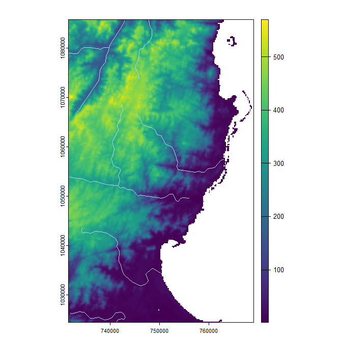
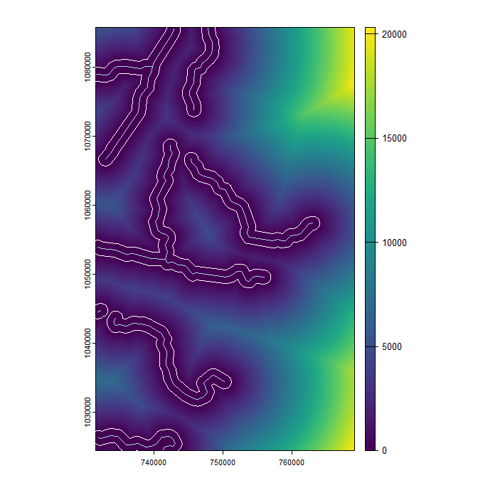

Faster raster processing in R using GRASS GIS

fasterRaster is a package designed specifically to handle large-in-memory/large-on-disk spatial rasters and vectors. fasterRaster does this using Open Source Geospatial’s GRASS GIS
fasterRaster was created with five design principles:
-
Value added:
fasterRastercomplementsterraandsf, and is highly dependent on them! It is useful for analyzing large-in-memory/large-on-disk rasters and vectors that those packages struggle to handle. For medium- and small-size objects,terraandsfwill almost always be faster.
-
Familiarity: If you know how to use
terra, you basically know how to usefasterRaster! That’s because most of the functions have the same name and almost the same arguments asterrafunctions.
-
Comparability: To the degree possible, outputs from
fasterRasterare the same as those from functions interrawith the same name.
-
Simplicity:
GRASSrequires users to track things like “locations”, “mapsets”, and “regions” for which there is no comparable analog in theterraorsfpackages.fasterRasterhandles these behind the scenes so you don’t need to.
-
It’s R: The
rgrasspackage provides a powerful conduit through which you can runGRASSmodules fromR. As such, it provides much more flexibility thanfasterRaster. However, to usergrass, you need to know whatGRASSmodules you need and be familiar withGRASSsyntax.fasterRasterobviates this step but usesrgrassas a backend, allowing you to focus onRsyntax and look up help for functions the normal way you do inR. You don’t need to knowGRASS!
fasterRaster makes heavy use of the rgrass package by Roger Bivand and others, the terra package by Robert Hijmans, the sf package by Edzer Pebesma Roger Bivand, and of course GRASS GIS, so is greatly indebted to all of these creators!
Where we are
As of 2024/09/15, a new version of this package, fasterRaster 8.3, is in alpha release (i.e., near final release). There are known issues and unknown issues. If you encounter one of the latter, please file an issue report.
Special announcement: The new bioclims() function creates the “classic” set of BIOCLIM variables, plus an optional “extended” set. The function works on fasterRaster GRasters and on terra SpatRasters!
Functions
To see a detailed list of functions available in fasterRaster, attach the package and use ?fasterRaster. Note the additional tutorials linked from there!
Getting started
To install fasterRaster, please use:
remotes::install_github('adamlilith/fasterRaster', dependencies = TRUE)
Alternatively, you can install the development version from:
remotes::install_github('adamlilith/fasterRaster@intuitive_fasterRaster', dependencies = TRUE)
To use fasterRaster you must install GRASS version 8+ on your operating system. You will need to use the stand-alone installer, not the Open Source Geospatial (OS Geo) installer.
An example
We’ll do a simple operation in which we:
Add a buffer to lines representing rivers, then
Calculate the distance to from each cell to the closest buffer and burn the distance values into a raster.
To do this, we’ll be using maps representing the middle of the eastern coast of Madagascar. We will also use the terra and sf packages.
library(terra)
library(sf)
library(fasterRaster)
# Get example elevation raster and rivers vector:
madElev <- fastData('madElev') # SpatRaster with elevation
madRivers <- fastData('madRivers') # sp vector with rivers
# Plot inputs:
plot(madElev)
plot(st_geometry(madRivers), col = "lightblue", add = TRUE)
Before you use nearly any function in the package, you need to tell fasterRaster where GRASS is installed on your system. The installation folder will vary by operating system and maybe GRASS version, but will look something like this:
grassDir <- "C:/Program Files/GRASS GIS 8.3" # Windows
grassDir <- "/Applications/GRASS-8.2.app/Contents/Resources" # Mac OS
grassDir <- "/usr/local/grass" # LinuxNow, use the faster() function to tell fasterRaster where GRASS is installed:
faster(grassDir = grassDir)The fast() function is the key function for loading a raster or vector into fasterRaster format. Rasters in this package are called GRasters and vectors GVectors (the “G” stands for GRASS). We will now convert the madElev raster, which is a SpatRaster from the terra package, into a GRaster.
elev <- fast(madElev)
elevYou should see some metadata on the GRaster:
class : GRaster
topology : 2D
dimensions : 1024, 626, NA, 1 (nrow, ncol, ndepth, nlyr)
resolution : 59.85157, 59.85157, NA (x, y, z)
extent : 731581.552, 769048.635, 1024437.272, 1085725.279 (xmin, xmax, ymin, ymax)
coord ref. : Tananarive (Paris) / Laborde Grid
name(s) : madElev
datatype : integer
min. value : 1
max. value : 570Next, we’ll do the same for the rivers vector. In this case, the vector is an sf object from the sf package, but we could also use a SpatVector from the terra package.
rivers <- fast(madRivers)
riversclass : GVector
geometry : 2D lines
dimensions : 11, 11, 5 (geometries, sub-geometries, columns)
extent : 731627.1, 762990.132, 1024541.235, 1085580.454 (xmin, xmax, ymin, ymax)
coord ref. : Tananarive (Paris) / Laborde Grid
names : F_CODE_DES HYC_DESCRI NAM ISO NAME_0
type : <chr> <chr> <chr> <chr> <chr>
values : River/Stream Perennial/Permanent MANANARA MDG Madagascar
River/Stream Perennial/Permanent MANANARA MDG Madagascar
River/Stream Perennial/Permanent UNK MDG Madagascar
...and 8 more rows
Now, let’s add a 1000-m buffer to the rivers using buffer(). As much as possible, fasterRaster functions have the same names and same arguments as their counterparts in the terra package to help users who are familiar with that package.
Note, though, that the output from fasterRaster is not necessarily guaranteed to be the same as output from the respective functions terra. This is because there are different methods to do the same thing, and the developers of GRASS may have chosen different methods than the developers of other GIS packages.
# width in meters because CRS is projected
river_buffers <- buffer(rivers, width = 1000, dissolve = TRUE)Now, let’s calculate the distances between the buffered areas and all cells on the raster map using distance().
dist_to_rivers_meters <- distance(elev, river_buffers)Finally, let’s plot the output.
plot(dist_to_rivers_meters)
plot(river_buffers, border = 'white', add = TRUE)
plot(rivers, col = "lightblue", add = TRUE)
And that’s how it’s done! You can do almost anything in fasterRaster you can do with terra. The examples above do not show the advantage of fasterRaster because the they do not use in large-in-memory/large-on-disk spatial datasets. For very large datasets, fasterRaster can be much faster! For example, for a large raster (many cells), the distance() function in terra can take many days to run and even crash R, whereas in fasterRaster, it could take just a few minutes or hours.
Exporting GRasters and GVectors from a GRASS session
You can convert a GRaster to a SpatRaster raster using rast():
terra_elev <- rast(elev)
To convert a GVector to the terra package’s SpatVector, use vect():
terra_rivers <- vect(rivers)You can use writeRaster() and writeVector() to save fasterRaster rasters and vectors directly to disk. This will always be faster than using rast() or vect() and then saving.
elev_temp_file <- tempfile(fileext = ".tif") # save as GeoTIFF
writeRaster(elev, elev_temp_file)
vect_temp_shp <- tempfile(fileext = ".shp") # save as shapefile
vect_temp_gpkg <- tempfile(fileext = ".gpkg") # save as GeoPackage
writeVector(rivers, vect_temp_shp)
writeVector(rivers, vect_temp_gpkg)Tips for making fasterRaster faster
Loading rasters and vectors directly from disk using
fast(), rather than convertingterraorsfobjects is faster. Why? Because if the object does not have a file to which theRobject points,fast()has to save it to disk first as a GeoTIFF or GeoPackage file, then load it intoGRASS.Similarly, saving
GRasters andGVectors directly to disk will always be faster than converting them toSpatRasters orSpatVectorusingrast()orvect(), then saving them. Why? Because these functions actually save the file to disk then uses the respective function from the respective package to connect to the file.Every time you switch between using a
GRasterorGVectorwith a different coordinate reference system (CRS),GRASShas to spend a few second changing to that CRS. So, you can save some time by doing as much work as possible with objects in one CRS, then switching to work on objects in another CRS.By default,
fasterRasteruse 2 cores and 2048 MB (2 GB) of memory forGRASSmodules that allow users to specify these values. You can set these to higher values usingfaster()and thus potentially speed up some calculations. Functions in newer versions ofGRASShave more capacity to use these options, so updatingGRASSto the latest version can help, too.Compared to
terraandsf,fasterRasteris not faster with large vector operations, so if have large vectors, do vector processing with those packages first if you can.To obviate problems with disk space filling up, by default most fasterRaster functions delete intermediate files. However, if you are not creating a lot of very big
GRasters orGVectors, you can skip this time-taking step by setting thecleanoption toFALSEusingfaster(clean = FALSE).
Versioning
fasterRaster versions will look something like 8.3.1.2, or more generally, M1.M2.S1.S2. Here, M1.M2 will mirror the version of GRASS for which fasterRaster was built and tested. For example, fasterRaster version 8.3 will work using GRASS 8.3 (and any earlier versions starting from 8.0). The values in S1.S2 refer to “major” and “minor” versions of fasterRaster. That is, a change in the value of S1 (e.g., from 8.3.1.0 to 8.3.2.0) indicates changes that potentially break older code developed with a prior version of fasterRaster. A change in S2 refers to a bug fix, additional functionality in an existing function, or the addition of an entirely new function.
Note that the M1.M2 and S1.S2 increment independently. For example, if the version changes from 8.3.1.5 to 8.4.1.5, then the new version has been tested on GRASS 8.4, but code developed with version 8.3.1.X of fasterRaster should still work.
NOTE: While fasterRaster is still in beta/alpha release, the version will look something like 8.3.0.7XXX, following Hadley Wickham’s guidelines for versioning under development.
Further reading
- Robert Hijman’s
terrapackage and Edzer Pebesma’ssfpackage are good places to start if you are not familiar with doing GIS inR.
- Roger Bivand’s
rgrasspackage allows users to call anyGRASSfunction with all of its functionality, which in some cases is far beyond what is allowed byfasterRaster.
- The GRASS GIS website is authoritative and contains the manual on all the
GRASSfunctions used in this package and more.
- The Wiki on how to run
GRASSinRorRinGRASSwill help you to become a power-user ofGRASSinR.
Citation
A publication is forthcoming(!), but as of February 2024, there is not as of yet a package-specific citation for fasterRaster. However, the package was first used in:
Morelli, T.L., Smith, A.B., Mancini, A.N., Balko, E. A., Borgenson, C., Dolch,R., Farris, Z., Federman, S., Golden, C.D., Holmes, S., Irwin, M., Jacobs,R.L., Johnson, S., King, T., Lehman, S., Louis, E.E. Jr., Murphy, A.,Randriahaingo, H.N.T., Lucien,Randriannarimanana, H.L.L.,Ratsimbazafy, J.,Razafindratsima, O.H., and Baden, A.L. 2020. The fate of Madagascar’s rainforest habitat. Nature Climate Change 10:89-96. * Equal contribution DOI: https://doi.org/10.1038/s41558-019-0647-x.
Abstract. Madagascar has experienced extensive deforestation and overharvesting, and anthropogenic climate change will compound these pressures. Anticipating these threats to endangered species and their ecosystems requires considering both climate change and habitat loss effects. The genus Varecia (ruffed lemurs), which is composed of two Critically Endangered forest-obligate species, can serve as a status indicator of the biodiversity eastern rainforests of Madagascar. Here, we combined decades of research to show that the suitable habitat for ruffed lemurs could be reduced by 29–59% from deforestation, 14–75% from climate change (representative concentration pathway 8.5) or 38–93% from both by 2070. If current protected areas avoid further deforestation, climate change will still reduce the suitable habitat by 62% (range: 38–83%). If ongoing deforestation continues, the suitable habitat will decline by 81% (range: 66–93%). Maintaining and enhancing the integrity of protected areas, where rates of forest loss are lower, will be essential for ensuring persistence of the diversity of the rapidly diminishing Malagasy rainforests.
~ Adam